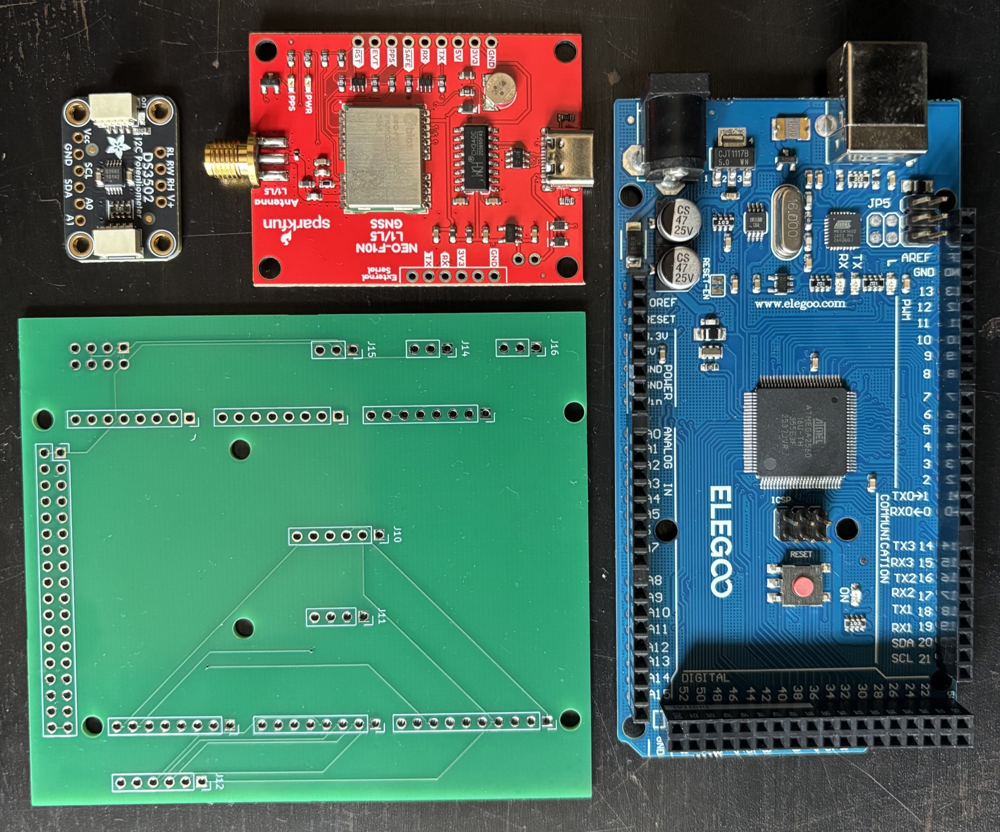
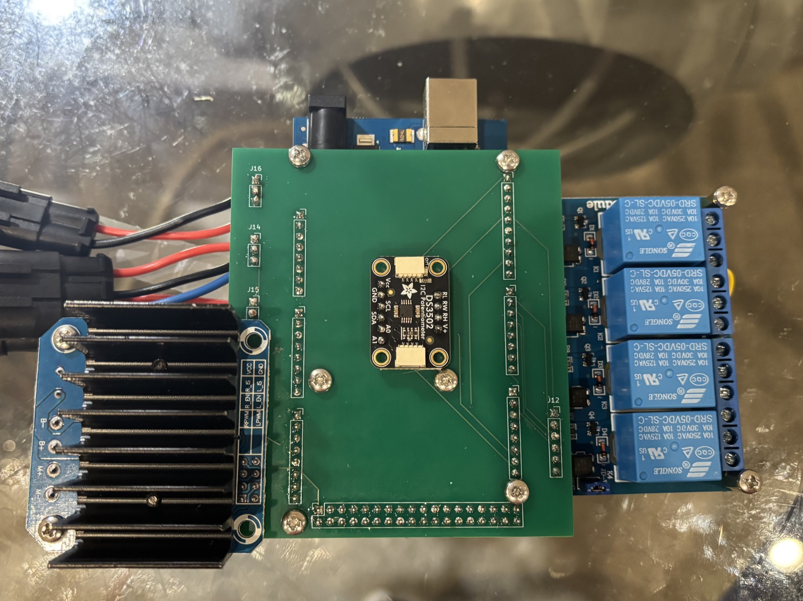

01 · Overview
What this is
TeslaCart turns an ordinary electric golf cart into a self-driving vehicle. Every physical control (steering, throttle, braking, and direction) has been replaced with electronics that a small onboard computer can operate, and the cart drives itself using an AI model trained on real driving demonstrations rather than hand-written rules.
It's a full-stack build spanning custom electronics, embedded firmware, and modern machine learning, done solo, on a student budget. Everything is bolt-on and reversible: unplug the intercept harness and unbolt a couple of brackets, and the cart is stock again.
02 · Hardware
Hardware architecture
Platform
- Vehicle
- 2015 Club Car Precedent i2, 48 V electric golf cart
- Stock drivetrain
- MCOR4 throttle module → Curtis motor controller
- Retrofit principle
- Full drive-by-wire, with every control manually reversible: T-harness intercepts, no cutting into the stock loom
Compute: a three-layer control stack
The smart computer can't guarantee timing (it runs Linux); the dumb one can. So the deterministic layer sits between the smart layer and anything that can hurt someone, and each layer fails gracefully into the one below it.
The driving model is deliberately not in the safety path, which is what makes its ~1 Hz inference rate acceptable. Two rates run at once: the model steers at about 1 Hz, while deterministic detectors run on their own thread at camera rate and can override it at any moment. Steering tolerates roughly a second of staleness at 8 to 12 mph because lane position drifts over metres, not centimetres.
The Arduino stays in the loop even under autonomy, so a watchdog can stop the cart independently of the Linux side. Lose the heartbeat and it zeroes throttle on its own authority.
Drive-by-wire subsystems
Steering motorized, calibrated, driven live
NEMA 34 closed-loop stepper (12 N·m) with an HBS86H driver, belt-driven to the steering column through a 30T→80T HTD-5M pair, a 2.67:1 reduction (~32 N·m at the column).
Position-controlled, and deliberately desensitised: a fully
deflected stick reaches ±2500 steps, and holding it
pinned lets the reachable limit creep out toward the
±6000-step hard limit for tight turns. Beyond that the
motor loses position, so the firmware never goes there. It
self-centers on release.
The closed-loop encoder reads column angle even in manual driving, and the motor is backdrivable when disabled, so a human can always steer through it.
Throttle road-tested under load
A DS3502 digital potentiometer electrically impersonates the pedal sensor and is swapped in via relays. The motor controller can't tell the difference, and no servo touches the pedal.
Fail-safe by construction: relays de-energized (Arduino off, crashed, or unpowered) reconnects the real pedal. Every command passes through one clamped, slew-rate-limited function.
Braking bench-tested and mounted on the cart
A self-locking 12 V linear actuator (330 lb) pulls the brake cable through a tension-only Y-bridle at the cable equalizer, driven by a BTS7960 H-bridge, with a slide potentiometer for continuous brake-position feedback.
Tension-only means the human always wins: press the pedal harder and the cable goes slack; if the cable snaps, the brakes release. Manual during the remote-control phase; part of the model's action space for autonomy.
Forward / Reverse harness traced, relays wired, reverse in firmware
The cart's direction-select signals are intercepted with relays so direction can be set in firmware, using the same reversible T-harness pattern as the throttle.
Firmware only ever switches direction at a verified standstill. Harness meter-tested, both relays wired, reverse in firmware. See the build log.
The custom control board
The prototype lived on perfboard; the production version is a purpose-built PCB designed in KiCad and fabricated, carrying the Arduino Mega, the digital potentiometer that impersonates the throttle pedal, the relay bank, and the motor-driver heatsink on one board. It replaces a mat of jumper wires with something that can be unplugged and reseated without re-tracing every connection.


The steering assembly, in 3D
Nothing about the mount was off the shelf. It had to locate a NEMA 34 against a steering column that was never meant to carry one, hold the belt at the right tension, and still bolt to existing holes. It was modelled from measurements of the cart:
And here is what came out of it. Drag to spin, scroll to zoom; this is the real CAD, loaded straight from the STL in the build repo.
Cameras: 360° vision
- 6× Innomaker U20CAM-1080P USB cameras, 1080p @ 30 fps, MJPEG, native UVC, ~130° diagonal field of view each.
- Surround layout: front-center, two front corners (≈±60°), two rear corners (≈±120°), and rear-center, mounted on PVC rails under the roof lip with cabling routed inside the rail.
- All six stream at once, verified. MJPEG compression
is necessary but not sufficient: these cameras over-declare their USB
bandwidth, so stock Linux only lets two stream per controller. A
patched
uvcvideokernel driver that clamps the reservation, plus splitting the hubs across two USB root ports, gets all six running at 1080p30 (20–27 fps each, zero dropped frames). - All six views go into the model. Nothing in SmolVLA caps the camera count; the three cameras in the pretrained config are the tabletop rig it was fine-tuned on, not an architectural limit. Measured on the Jetson, six views cost only ~240 ms more than one, which is less than dropping five denoising steps would buy back. Three cameras face forward for driving, three face rearward for reverse and for triggered maneuvers like backing in.
- Cameras are powered from the cart through powered USB hubs (fed by a wide-input DC-DC buck converter off the battery busbars), so camera load and heat stay off the Jetson, whose port carries data only.
The camera setup, in 3D
The full camera setup: housings and rail hardware together. Same deal, drag to spin, scroll to zoom.
Power distribution
48 V pack → master battery-disconnect switch → main fuse → positive/negative busbars → individually fused branches for the steering driver, camera power, and compute. Separate DC-DC converters isolate the Jetson from the brake actuator, so motor inrush can't brown out the computer mid-drive.
03 · Software
Software architecture
The model
The driver is a pretrained vision-language-action (VLA) model, fine-tuned on the cart's own driving data, not trained from scratch and not a hand-coded rule system. The base model, SmolVLA (~450M parameters, from the Hugging Face LeRobot ecosystem), already understands roads, scenes, and obstacles; fine-tuning teaches it this cart's specific controls.
Inference was benchmarked on the Jetson rather than estimated. At the chosen configuration (six views, 512×512, ten denoising steps) one pass takes ~1064 ms in eager PyTorch, just under 1 Hz, using under 1 GB of the 8 GB. Denoising steps dominate that number at roughly 69 ms each; camera count barely moves it, which is why all six stay in. Cutting the denoising steps and exporting through TensorRT FP16 are the levers if it needs to go faster.
The autonomy loop
The mapping layer is the exact same code path already used for manual Xbox-controller driving. The model simply replaces the joystick. That means the autonomy stack inherits a control path that has already been proven by hours of human driving.
Safety override layer
A dedicated person/obstacle detector runs alongside the driving model and can override it to force a brake, a hard deterministic rule sitting above the probabilistic driving policy. It's built on the object detection already running on the Jetson (SSD-MobileNet via TensorRT, validated with live bounding boxes).
Defense in depth: learned model → explicit detector → Arduino watchdog → a kill switch on the operator's controller → a physical cutoff switch on the cart. No single layer is trusted alone.
Testing is done with the cart empty and the operator on foot alongside it, not from the driver's seat. Killing throttle from the controller drops the relays and returns the cart to stock, and at the speeds being tested a person on foot can stay ahead of it. Everything runs on private property or permitted low-speed neighborhood roads, never on public sidewalks.
How the pieces talk
- Jetson ↔ Arduino: USB serial with a compact
line-based protocol, one letter per channel, streamed ~50×/second.
Scarries the steering stick position,Tthrottle,Bthe brake target,Ddirection andCwhich side holds control. The Arduino talks back withF, the measured brake-fader reading. Go 400 ms with no message and throttle drops to zero with control handed back to the stock rocker. - Xbox controller ↔ compute: used for manual driving and data collection, over Bluetooth to the Jetson or USB to a laptop during bring-up. Stick input is expo-shaped (softer near center) for precise steering.
Training & data collection
- Data is collected by driving the cart manually via the controller. The controller inputs are the training labels: the model learns to reproduce the commands the human issued.
- Each logged record:
timestamp, 6 camera frames, commanded steering / throttle / directionat 10–15 Hz, converted offline to the LeRobot dataset format. Brake logs the actual potentiometer position, continuous feedback rather than just the command. - Every episode carries a language instruction, because the model is language-conditioned: a closed vocabulary (follow the road, turn left at the intersection, turn right at the intersection) chosen on the controller before each 15–30 s episode, so the label is captured at record time, not reconstructed later. At drive time the same strings come from a deterministic routing layer (GPS snapped to an OpenStreetMap road graph); the model never sees a map, and GPS stays out of its inputs so it can't memorize intersections by coordinate.
- Target: roughly 5–10 hours of clean driving, with 50 to 100 episodes per maneuver as the floor and 100+ for turns, spread over as many different intersections as the neighborhood offers. That includes deliberate recovery episodes (drift off-center, then correct) to teach the model how to recover. That's the main defense against distribution shift, extended after deployment with DAgger-style iteration: log interventions, add correction data, re-fine-tune.
- Reverse is left out of the initial action space (rare, low-data, and mixing a discrete flip into continuous control hurts learning). It is logged now and added later.
04 · Build log
Phase by phase
Honest status, phase by phase: what's proven and what hasn't started. Every subsystem below is built and running on the cart; the one open phase is marked as such. ✅ Complete ⬜ Planned
-
July 11–14, 2026
Phase 1: Throttle drive-by-wire ✅ Complete
Digital-potentiometer throttle intercept of the MCOR module, relay-switched between the real pedal and the computer. Bench-tested, then road-tested on the cart under load, from a 25% crawl to full throttle. Includes a serial watchdog that zeroes throttle on signal loss.
The throttle intercept in its test box: Arduino Mega, relay board and the digital-pot circuit that impersonates the pedal. Where it started. Working out the intercept on the whiteboard. Driving the cart on the spacebar alone: no pedal, no servo, just the intercept taking commands. Installed under the floor, spliced into the pedal. -
July–August 2026
Phase 2: Steering drive-by-wire ✅ Complete
Closed-loop stepper + belt drive to the steering column. Lock-to-lock calibrated: ±6000 steps is the hard limit before the motor loses position, and normal stick deflection is deliberately held to ±2500 so the steering isn't twitchy at speed. Driven live from an Xbox controller with self-centering, absolute-position steering.
Driving the column: the wheel and the front tires turning under motor control. The HBS86H driver and motor cable, before they went on the cart. -
July 26–30, 2026
Phase 3: Brake subsystem ✅ Complete
Linear-actuator brake with a tension-only cable bridle and continuous position feedback. Full chain bench-tested successfully, extending and retracting at variable speed over serial, with the self-locking actuator holding position at no holding current. It is now mounted on the cart, pulling the brake cable through the Y-bridle at the equalizer. Because the linkage is tension-only, the pedal still overrides it and a snapped cable releases the brakes.
The brake runs closed-loop on its slide fader: the trigger sets a target reading and the actuator drives until it lands inside a deadband, with a hard floor enforced no matter what is commanded. The Arduino reports that fader reading back to the Jetson, so logged brake labels are the measured position rather than the command.
The actuator on the cart, pulling the brake cable through the tension-only bridle at the equalizer. -
July 2026
Phase 4: Compute bring-up ✅ Complete
Jetson Orin Nano set up on JetPack 6.2.1, root filesystem migrated from microSD to the NVMe SSD, and live object detection running via TensorRT (SSD-MobileNet with real-time bounding boxes), proving the capture → neural net → render loop the driving model will use. Since then it runs headless: Tailscale + key-based SSH, no monitor or keyboard needed.
-
August 2026
Phase 5: Power distribution ✅ Complete
The whole trunk is wired on the cart: 48 V pack → master disconnect switch → main fuse → positive/negative busbars → individually fused branches, with separate DC-DC converters so the Jetson, the brake driver, and the camera hubs each get their own isolated supply. The cameras now run off the cart rather than wall bricks. Every connection is documented pin-for-pin in the build repo's wiring reference, and the negative busbar is the single ground star that every subsystem lands on.
The finished trunk on the dash: busbars, fused branches and the isolated DC-DC supplies, all landing on one panel. -
August 2026
Phase 6: Forward / Reverse ✅ Complete
The 3-wire direction harness was meter-tested on the cart, identifying forward, reverse and common and confirming polarity, and the two relays wired: one hands control from the real rocker switch to the computer, the other selects direction. De-energized, the stock rocker is in charge, same fail-safe pattern as the throttle. Reverse is in firmware and only ever switches at a verified standstill. No new hardware, just existing relay channels and Arduino pins.
Direction switching under firmware control: reverse, stop, forward, with the stock rocker still in charge when de-energized. -
August 2026
Phase 7: Remote control ✅ Complete
With throttle, steering, braking and direction all under firmware control, the cart could be driven with nobody in it, the operator standing outside and the seat empty. This is the step that proves every subsystem works together rather than one at a time, and it's the configuration the training data was later collected in: the controller inputs are the labels, so what the model learns to reproduce is exactly what was commanded here.
Driving away with an empty seat: throttle, steering and direction all commanded remotely. The first passenger. -
August 23–30, 2026
Phase 8: Camera subsystem ✅ Complete
The gating test passed: all six cameras stream 1080p30 MJPEG concurrently on the Jetson, 20–27 fps each, with zero failed grabs and zero corrupt frames. Getting there took real driver work. Out of the box only two cameras would stream: they declare far more USB bandwidth than MJPEG actually needs, and the kernel reserves what they ask for. Root-caused it, then built and installed a patched
uvcvideokernel module that clamps the reservation, and split the two hubs across separate USB root ports for a second bandwidth budget. Cameras are identified by stable port paths (never/dev/videoN, which shuffles on every reboot), and exposure / line-frequency settings are applied automatically at boot by a systemd service, verified across a real reboot with no manual step. Housings are printed, the rail is mounted on the cart, and exposure is retuned for outdoor light.All six modules staged for the first run. Building the rail: modules into the printed housings, then the finished run with cabling inside. -
August 30, 2026
Phase 9: GPS & routing layer ✅ Complete
Receiver and antenna installed and working: a SparkFun NEO-F10N (u-blox F10 series, dual-band L1/L5 with multipath mitigation, ~1.5 m accuracy) paired with a multi-band active antenna. The antenna deliberately cost more than the receiver, because the antenna decides how many satellites actually get heard, and an L1-only one would have wasted the board's L5 capability. First outdoor fix came in at 12 satellites, HDOP 0.75.
Getting there was mostly operating-system archaeology: the first USB cable turned out to be charge-only, JetPack ships without the
ch341kernel module the receiver's USB-serial bridge needs (built from source and installed), and Ubuntu's braille-display daemon quietly claims CH340 devices until it is removed. The receiver is addressed by its stable/dev/serial/by-id/path, neverttyUSB0, and the launcher filters that same path out of its Arduino auto-detect so the drive loop can never open the GPS by mistake.Its job is deliberately narrow: stamp logged frames with position and speed, and feed a deterministic routing layer that snaps to an OpenStreetMap road graph and publishes a single instruction string to the driving model. GPS stays out of the model's inputs entirely. Enabling the L5 band over UBX and finalizing the antenna mount on the cart are the two open items.
The active antenna on the cart: the half that decides how many satellites actually get heard. -
August 2026 →
Phase 10: Autonomy (VLA training) ✅ Complete
The data-collection design is locked, with language-conditioned episodes on a frozen instruction vocabulary, labeled at record time from the controller, and 100+ episodes per maneuver spread across many intersections. The model side was sized before any driving data exists: the pretrained SmolVLA checkpoint is set up on the Jetson with LeRobot, and an inference benchmark sweeps camera views, image resolution, and denoise steps to measure exactly what six views cost in latency and memory. The loop is now closed: driving data collected on the cart, the model fine-tuned and deployed on the Jetson, and the safety override layered on top, with the cart driving itself point to point.
A full point-to-point run, sped up: the cart driving itself down the street, with the seat empty and the operator alongside. -
Later
Phase 11: LiDAR ⬜ Planned
Not started, deliberately deferred. An independent, depth-sensing obstacle-detection layer alongside the cameras, a second opinion that doesn't share their failure modes (glare, low light, a lens cap of dust). It would slot into the existing override layer above the driving policy, not into the model itself, so the autonomy stack ships and proves out on cameras first. Sensor selection, mounting, and the cost trade against a plain radar are all open.
05 · Roadmap